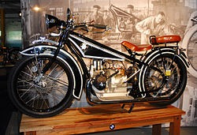

Bayerische Motoren Werke AG (Türkçe: Bavyera Motor Fabrikaları A.Ş.) genellikle anılan kısaltmasıyla BMW, 1916 yılında kurulan Alman: otomobil, motosiklet, motor ve bisiklet üreticisidir. BMW ayrıca, Mini ve Rolls-Royce, otomobil şirketlerinin sahibidir. Çalışan sayısı 120.726’dır. 2020 cirosu 98 Milyar 998 Milyon Euro’dur, aynı yıl 2.494.451 araç üretmiştir. Bu üretimin 2.028.841 adedi BMW markası altındadır. Ayrıca aynı yıl motosiklet üretimi 169.272 adettir. Sadece motor sporlarına özel BMW M'i de bünyesinde bulundurur. Şirketin sloganı ve resmî kurumsal dili İngilizcedir. Sloganı 'Sheer Driving Pleasure' (Gerçek Sürüş Keyfi). Bu sloganla, ünlü Alman teknolojisini ve Ar-Ge'deki kendine güveni vurgulamaktadır.
| Anasayfa | 1 | 2 | 3 | 4 | 5 | 6 | 7 | 8 | 9 | 10 | 11 | 12 | 13 | 14 | 15 | 16 | 17 | 18 | 19 | 20 |